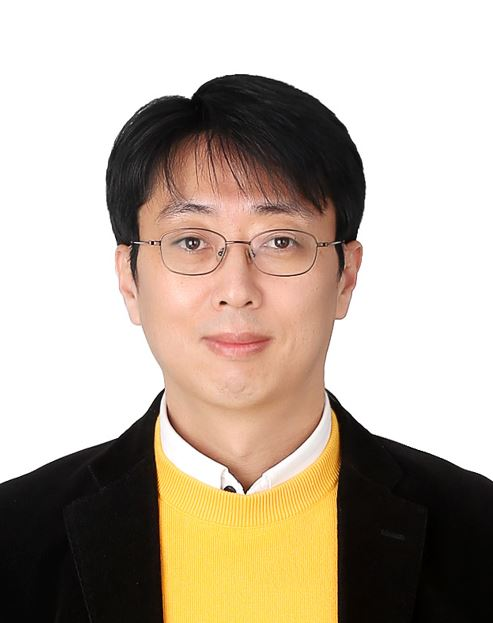

Prof. Daejin Park
|  | Associate Professor (Full), Ph.D. |
 |
Bio Sketch
Technical Background
 With over 20 years of industrial and academic experience in low-power intelligent system-on-chip design, Dr. Park played a key role in successfully designing custom-designed system-on-chip (SoC) for applications processors with software-embedded hardware accelerator and hardware resource-aware software optimization, especially for hardware/software tightly-coupled applications, such as smart mobile devices, electrical automotives.
With over 20 years of industrial and academic experience in low-power intelligent system-on-chip design, Dr. Park played a key role in successfully designing custom-designed system-on-chip (SoC) for applications processors with software-embedded hardware accelerator and hardware resource-aware software optimization, especially for hardware/software tightly-coupled applications, such as smart mobile devices, electrical automotives.
Academic Background
 Dr. Park received his B.S degree in electrical engineering from the Kyungpook National University and joined as M.S in KAIST (Korea Advanced Institute of Science and Technology). He got his M.S degree about system DSP Software and Hardware fast-prototyping such as compilers, especially for low-power small footprint instruction code optimization for application-specific embedded systems. Dr. Park received his Ph.D degree with Excellence Award Prize in KAIST with newly-designed low-power event-driven sensor processor architecture for intelligent human activity recognition. Dr. Park was nominated as one of Presidential Research Fellows 21, which supported my research by the Basic Science Research Program through the National Research Foundation of Korea (NRF) funded by the Ministry of Education.
Dr. Park received his B.S degree in electrical engineering from the Kyungpook National University and joined as M.S in KAIST (Korea Advanced Institute of Science and Technology). He got his M.S degree about system DSP Software and Hardware fast-prototyping such as compilers, especially for low-power small footprint instruction code optimization for application-specific embedded systems. Dr. Park received his Ph.D degree with Excellence Award Prize in KAIST with newly-designed low-power event-driven sensor processor architecture for intelligent human activity recognition. Dr. Park was nominated as one of Presidential Research Fellows 21, which supported my research by the Basic Science Research Program through the National Research Foundation of Korea (NRF) funded by the Ministry of Education.
Industrial Experience
 Dr. Park was a research engineer at major electronics companies such as SK Hynix Semiconductor, Samsung Electronics over 12 years from 2003 to 2014, respectively and have worked on processor architecture design and low-power custom VLSI chip-level implementation with custom-designed software algorithm optimization. He was one of the startup founding members of KOSDAQ-listed fabless system-on-chip company (ABOV Semiconductor). He has published over 200 technical papers and 20 patents (including 2 U.S patents). Since 2014, he is now an assistant professor in School of Electronics Engineering in Kyungpook National University (KNU). Prof. Park was awarded with Legion of Merit by Prime Minister of Korea Government and nominated as a man of merit in Korea Science and ICT memorial day.
Dr. Park was a research engineer at major electronics companies such as SK Hynix Semiconductor, Samsung Electronics over 12 years from 2003 to 2014, respectively and have worked on processor architecture design and low-power custom VLSI chip-level implementation with custom-designed software algorithm optimization. He was one of the startup founding members of KOSDAQ-listed fabless system-on-chip company (ABOV Semiconductor). He has published over 200 technical papers and 20 patents (including 2 U.S patents). Since 2014, he is now an assistant professor in School of Electronics Engineering in Kyungpook National University (KNU). Prof. Park was awarded with Legion of Merit by Prime Minister of Korea Government and nominated as a man of merit in Korea Science and ICT memorial day.
Recent Research
Research Topic
 Dr. Park is currently exploring newly-designed accelerated artificial intelligent (AI) system/software-on-chip (SSoC) with hardware/software reconfigurable unit based on dynamic partial replacement. His research objective are toward realizing ultra low-energy AI SSoC based on software-hardware fully-integrated VLSI chip, powered by energy efficient digital signal processing acceleration unit, runtime binary code virtualization engine, and dynamic partial replacement unit of hardware/software for intelligent embedded systems.
Dr. Park is currently exploring newly-designed accelerated artificial intelligent (AI) system/software-on-chip (SSoC) with hardware/software reconfigurable unit based on dynamic partial replacement. His research objective are toward realizing ultra low-energy AI SSoC based on software-hardware fully-integrated VLSI chip, powered by energy efficient digital signal processing acceleration unit, runtime binary code virtualization engine, and dynamic partial replacement unit of hardware/software for intelligent embedded systems.
Sponsored Research Grants
Our research group has been sponsored from the national research fund (NRF), research institutes and various industrial companies. Welcome to contact us about the technology transfer, technical consulting, and discussion for future collaboration.
Self Supervised Learnable Flexible AI-Edge Processors, 2023-2026, IITP, MSICT
AI Grand ICT Research Center 6th Division for ICT Smart Factory Research, 2022-2029, IITP
Intelligent Streamable AI Microservice Runtime Platform for Edge-Serverless Metabus Infrastructure, 2022-2025, NRF.
Processing-in-Memory (PIM) Semiconductor Design Research Center, 2022-2028, IITP.
AI On-Demand Code Streamable Edge-Cloud Connected OpenAPI HW/SW Execution Platform, 2022-2023, IITP.
Metaverse Based Digital Healthcare Systems, 2022, DHS
Lecture on Embedded System Software for Hyundai Motor Group, 2022-2023, HNGV
Next Generation AI-MCU Platform R&D Center by Industry-Academy Student Fellowship Program, 2022, ABV
Distance-based Clustering Algorithm for Lightweight LiDAR-based 3D Object Tracking Eye, 2022, KNC
Multidisciplinary Research Training and Development Enterprise for AI and Semiconductor Technology, 2022 2025, SNU
Embedded IoT Virtualization-based Digital-Twin Smart Fabrication, 2021-2022, LS CNS.
Metamorphic Unstructured Validation/Verification for Analyzing Binary Code, 2021-2025, IITP
Self-Organized Community Computing Platform for Resilient Environment, 2021-2027, NRF
Vision-LiDAR Fusion-based Eye on Lightweight Realtime Embedded Processors, 2021, KNC
DSI3 Robust Interface for Automotive Connectivity Applications, 2021, GAF
Lightweight AI-Embedded Voice Recognition Accelerator on AI-Edge Devices, 2021, HDF
AI Bio-Signal Processing Algorithm-based Contact-less Medical Healthcare, 2021, DHS
Low-Power Sound Interface with Signal Processing Unit (TSMC CMOS process), 2021, ABV
Digital Twin-based Virtual Sensor Synthesis and Intelligent Parameter Optimization, 2020-2021, HDM
Lightweighted Intelligent System/S2oftware-on-Chip/Cloud Platform, 2019-2022, NRF
Intelligent Automotive Control by SW-HW Dynamic Partial Replacement, 2020, KOFAC, DHS
Low-Power LiDAR Processor and System-on-Chip for Automotives, 2019, Carnavicom
Human-Things Interactive Touchable Platform by IoT-Deep Learning, 2019, KOFAC, DHS
Self-Organized Community Computing Platform for Resilient Environment, 2018-2021, NRF
Self-Organized Intelligent Platform, 2017-2018, NRF
IoT-Cloud Replication for Robust Connected SW Execution, 2018-2019, LGE
Collaborative Fault Monitoring for Large-Scaled IoTs, 2017-2018, LGE
Robust Cloud-Connect System/Software-on-Cloud Platform, 2014-2019, NRF
Recent Publications (SCI-indexed Journal and Top Flagship Conference)
Differential Image-based Scalable YOLOv3 Implementation for Clustered Embedded Systems (JCR 2% Top SCI Journal) IEEE Transactions on Intelligent Transportation Systems, 2024
Implementation of Dynamic Round Robin Scheduling on Bare-Metal Shallow Multi-OS for Lightweighted Microcontrollers IEEE COMPSAC 2024.
Power-Efficient CNN Accelerator Design with Bit-Separable Radix-4 Booth Multiplier IEEE COOLChips 2024.
Deep Learning based Human Detection using Thermal-RGB Data Fusion for Safe Automotive Guide-Driving IEEE Percom 2024.
Low-Power Lane Detection Unit with Sliding-based Parallel Segment Detection Accelerator for Lightweighted Automotive Microcontrollers IEEE Access, 2024.
On-Cloud Linking Approach Using a Linkable Glue Layer for Metamorphic Edge Devices Electronics, 12(24):4901-4916, 2023.
Efficient Object Detection Using Semantic Region of Interest Generation with Light-Weighted LiDAR Clustering in Embedded Processors Sensors, 23(21):8981-8997, 2023.
Shallow Clock Tree Pre-estimation for Designing Clock Tree Synthesizable Verilog RTLs Electronics, 12(20):4340-4356, 2023.
Efficient Partial Weight Update Techniques for Lightweight On-Device Learning on Tiny Flash-Embedded MCUs IEEE Embedded Systems Letters, 15(4):206-209, 2023.
Efficient Partial Weight Update Techniques for Lightweight On-Device Learning on Tiny Flash-Embedded MCUs IEEE/ACM EMSOFT 2023.
Micro-Accelerator-in-the-Loop Framework for MCU Integrated Accelerator Peripheral Fast Prototyping IEEE/ACM EMSOFT 2023.
Searching Optimal Compiler Optimization Passes Sequence for Reducing Runtime Memory Profile using Ensemble Reinforcement Learning IEEE/ACM EMSOFT 2023.
RTOS-based Task-Driven Scheduling for Vehicle Independent BLDC Motor Control IEEE IECON 2023.
Integrated 3D Active Noise Cancellation Simulation and Synthesis Platform Using Tcl IEEE MCSoC 2023.
Optimized Replication of ADC-based Particle Counting Algorithm with Reconfigurable Multi-Variables in Pseudo-Supervised Digital Twining of Reference Dust Sensor Systems Sensors, 23(12):5557-5572, 2023.
Low-Power FPGA Realization of Lightweight Active Noise Cancellation with CNN Noise Classification Electronics, 12(11):2511-2526, 2023.
Runtime Tracking-based Replication of On-Chip Embedded Software using Transfer Function Learning for Dust Particle Sensor Systems IEEE Access, 11:32167-32175, 2023.
Digital-Twin Consistency Diagnosis Based on Partially Observed Timed Events in Smart Manufacturing IEEE Transactions on Industrial Informatics, 19(4):6208-6219, 2023.
Efficient Object Detection based on Masking Semantic Segmentation Region for Lightweight Embedded Processors Sensors, 22(22):8890-8911, 2022.
Efficient Sensor Processing Technique using Kalman Filter-based Velocity Prediction in Large-Scale Vehicle IoT Application IEEE Access, 10:116735-116746, 2022.
Comparative Neural Network based on Template Cluster for Automated Abnormal Beat Detection in Electrocardiogram Signals Human-centric Computing and Information Sciences (HCIS), 2022.
Semantic Depth Data Transmission Reduction Techniques based on Interpolated 3D Plane Reconstruction for Lightweighted LiDAR Signal Processing Platform Electronics, 11(14):2135-2152, 2022.
Runtime ML-DL Hybrid Inference Platform based on Multiplexing Adaptive Space-Time Resolution for Lightweight Object Detection in Low-Power Embedded Systems Sensors, 22(8):2998-3011, 2022.
Abnormal Beat Detection from Unreconstructed Compressed Signals Based on Linear Approximation in ECG Signals Suitable for Embedded IoT Devices Journal of Ambient Intelligence and Humanized Computing, 2022.
FPGA Optimized Realization of the Observer-Based Sliding Discrete Fourier Transform IEEE Access, 10:29432-29442, 2022.
Low-Power On-Chip Implementation of Enhanced SVM Algorithm for Sensors Fusion-based Activity Classification in Lightweighted Edge Devices Electronics, 11(1):139-159, 2022.
Hardware/Software Co-design for TinyML Voice-Recognition Application on Resource Frugal Edge Devices Applied Sciences, 11(22):11073-11087, 2021.
Energy-Efficient FPGA Accelerator with Fidelity-Controllable Sliding-Region Signal Processing Unit for Abnormal ECG Diagnosis on IoT Edge Devices IEEE Access, 2021.
Virtualization of Self-Driving Algorithms by Interoperating Embedded Controllers on Game Engine for Digital Twining Autonomous Vehicle Electronics, 2021.
Efficient On-Demand Hardware Replacement Platform toward Metamorphic Functional Processing in Edge-Centric IoT Applications Electronics, 2021.
Lightweight Microcontroller with Parallelized ECC-based Code Memory Protection Unit for Robust Instruction Execution in Smart Sensors Sensors, 2021.
Adaptive ECG Signal Compression Method Based on Look-ahead Linear Approximation for Ultra Long-Term Operating of Healthcare IoT Devices Human-centric Computing and Information Sciences (HCIS), 2021.
Low-Power Fast Partial Firmware Update Technique of On-Chip Flash Memory for Reliable Embedded IoT Microcontroller IEICE Transactions on Electronics, E104-C(6), 2021.
Hierarchical Aggregation/Disaggregation for Adaptive Abstraction-Level Conversion in Digital Twin-based Smart Semiconductor Manufacturing IEEE Access 2021.
Efficient Template Cluster Generation for Real-Time Abnormal Beat Detection in Lightweight Embedded ECG Acquisition Devices IEEE Access 2021.
Low-Power Beam-Switching Technique for Power-Efficient Collaborative IoT Edge Devices Applied Sciences 2021.
Real-Time Abnormal Beat Detection Method using Template Cluster for ECG Diagnosis on IoT Devices Human-centric Computing and Information Sciences (HCIS), 2021.
Accuracy-Power Controllable LiDAR Sensor System with 3D Object Recognition for Autonomous Vehicle Sensors, 20(19):5706-5725, 2020.
Robust Intra-Body Communication using SHA-ECC-CRC Inversion-based Frequency Shift Keying for Securing Electronic Authentication Sensors, 20(21):6056-6073, 2020.
Adaptive Abstraction-Level Conversion Framework for Accelerated Discrete-Event Simulation in Smart Semiconductor Manufacturing Moon Gi Seok, WENTONG CAI, HESSAM S. SARJOUGHIAN, and Daejin Park, IEEE Access, 2020.
mIoT: Metamorphic IoT Platform for On-Demand Hardware Replacement in Large-Scale IoT Applications, Dongkyu Lee, Hyungyun Moon, Sejong Oh, and Daejin Park, Sensors, 20(12):1-22, 2020.
User Insensible Sliding Firmware Update Technique for Flash-Area/Time-Cost Reduction toward Low-Power Embedded Software Replacement, J. S. Kwon and D. J. Park, IEEE COOLChips 2020.
Runtime Abstraction-level Conversion for Steady-state Simulation Speedup of Semiconductor Manufacturing System, M. G. Seok, D. J. Park, ACM SIGSIM PADS 2020.
A Novel Multi-level Evaluation Approach for Human-coupled IoT Applications, M. G. Seok, D. J. Park, Journal of Ambient Intelligence and Humanized Computing 2020.
Fast and Cycle-Accurate Simulation of RTL NoC Designs using Test-driven Cellular Automata, M. G. Seok, D. J. Park, IEEE Access, 2019.
A High-Level Modeling and Simulation Approach Using Test-Driven Cellular Automata for Fast Performance Analysis of RTL NoC Designs, M. G. Seok, D. J. Park, IEEE ASP-DAC 2019.
Conference Talks
IEEE COMPSAC 2024, Osaka, Japan, Implementation of Dynamic Round Robin Scheduling on Bare-Metal Shallow Multi-OS for Lightweighted Microcontrollers
IEEE COMPSAC 2024, Osaka, Japan, Cloud Memory Enabled Code Generation via Online Computing for Seamless Edge AI Operation
IEEE VNC 2024, Kobe, Japan, Multi-Camera Interoperable Emulation Framework using Embedded Edge-Cloud AI Computing for Autonomous Vehicle Driving
IEEE VNC 2024, Kobe, Japan, Self-Organizing Movement Control for Large-Scaled Autonomous Vehicle Collision Congestion Mitigation
IEEE COOLChips 2024, Tokyo, Japan, Power-Efficient CNN Accelerator Design with Bit-Separable Radix-4 Booth Multiplier
IEEE COOLChips 2024, Tokyo, Japan, Defragmentation-based Efficient Allocation on On-Chip Scratch-Pad Memory for Lightweighted Microcontrollers
IEEE Percom 2024, Biarritz, France, Deep Learning based Human Detection using Thermal-RGB Data Fusion for Safe Automotive Guide-Driving
IEEE ICEIC 2024, Taipei, Taiwan, Speed-Area-Power Efficient Ternary Logic Gate Implementation based on Typical MOS transistors
IEEE ICEIC 2024, Taipei, Taiwan, Parallel Processing of 3D Object Recognition by Fusion of 2D Images and LiDAR for Autonomous Driving
IEEE MCSoC 2023, Singapore, Integrated 3D Active Noise Cancellation Simulation and Synthesis Platform Using Tcl
IEEE ICMU 2023, Japan, Efficient Execution of On-Chip Embedded Software Using Pre-Emulation on Shallow OS
IEEE ICMU 2023, Japan, SVD-Based Particulate Matter Estimation Using LSTM-Based Post-Processing for Collaborative Virtual Sensor Systems
IEEE ISOCC 2023, Jeju, Korea, Tcl-based Simulation Platform for Light-weight ResNet Implementation
IEEE IECON 2023, Singapore, RTOS-based Task-Driven Scheduling for Vehicle Independent BLDC Motor Control
IEEE ICTC 2023, Jeju, Korea, Fast Bit Inversion Vulnerability Pre-estimation using Tcl and UPF in RTL Simulation Runtime
IEEE ICTC 2023, Jeju, Korea, Lightweighted Shallow CTS Techniques for Checking Clock Tree Synthesizable Paths and Optimizing Clock Tree in RTL Design Time
IEEE EMSOFT 2023, Germany, Efficient Partial Weight Update Techniques for Lightweight On-Device Learning on Tiny Flash-Embedded MCUs
IEEE EMSOFT 2023, Germany, Micro-Accelerator-in-the-Loop Framework for MCU Integrated Accelerator Peripheral Fast Prototyping
IEEE EMSOFT 2023, Germany, Searching Optimal Compiler Optimization Passes Sequence for Reducing Runtime Memory Profile using Ensemble Reinforcement Learning
IEEE MWSCAS 2023, USA, Dynamic MAC Unit Pruning Techniques in Runtime RTL Simulation for Area-Accuracy Efficient Implementation of Neural Network Accelerator
IEEE COOLChips 2023, Tokyo, Japan, Low-Power Parallel Lane Detection Unit for Lightweight Automotive Processors
IEEE ICAIIC 2023, Bali, Inndonesia, Differential Image-based Fast and Compatible Convolutional Layers for Multicore Processors
IEEE ICAIIC 2023, Bali, Inndonesia, Fast Verilog Simulation using Tcl-based Verification Code Generation for Dynamically Reloading from Pre-Simulation Snapshot
IEEE ICEIC 2023, Singapore, Intelligent Microcontroller using Runtime Coefficient Update Techniques for Disturbance Robust Output Control
IEEE ICEIC 2023, Singapore, Lightweighted FPGA Implementation of EvenOdd-Buffered Active Noise Canceller with On-Chip Convolution Acceleration Unit
IEEE ICCE 2023, Las Vegas, USA, FPGA Realization of Lane Detection Unit using Sliding-based Parallel Segment Detection for Buffer Memory Reduction
IEEE ICCE-Asia 2022, Yeosu, Korea, Edge-Cloud Cooperative Image Processing by Partially Streaming ROI Data for Metaverse Applications
IEEE ISPACS 2022, Malysia, Neural Network-based Approximate Quality Prediction for Parameter Exploration in Industrial Manufacturing
IEEE ICTC 2022, Jeju, Continuous Differential Image-based Fast Convolution for Convolutional Neural Networks
IEEE ISOCC 2022, Jeju, Korea, Lightweighted CTS Preconstruction Techniques for Checking Clock Tree Synthesizable Paths in RTL Design Time
IEEE ISOCC 2022, Jeju, Korea, Lightweighted AI-based Inference Unit using Deterministic Randomness Compensation Techniques for Long-Term ADC Resolution Enhancement
ACM EMSOFT 2022, Shanghai, China, Accuracy-Area Efficient Online Fault Detection for Robust Neural Network Software-Embedded Microcontrollers
IEEE IST 2022, Virtual, Runtime Virtual Lane Prediction Based on Inverse Perspective Transformation and Machine Learning for Lane Departure Warning in Low-Power Embedded Systems
IEEE ICCE-TW 2022, Taipei, Taiwan, Low-Power LiDAR Signal Processor with Point-of-Cloud Transformation Accelerator
IEEE LifeTech 2022, Osaka, Japan, An Integrated Bus Routing Control Platform for Autonomous Bus Driving based on Traffic-Demand Trade-off
IEEE ICAIIC 2022, Jeju, Korea, Mitigating Overflow of Object Detection Tasks Based on Masking Semantic Difference Region of Vision Snapshot for High Efficiency
IEEE ICEIC 2022, Jeju, Korea, Lightweight Buffer Insertion for Clock Tree Synthesis Visualization
IEEE ICCE 2022, Las Vegas, USA, Accelerated SVM Algorithm for Sensors Fusion-Based Activity Classification in Lightweighted Edge Devices
IEEE ISPACS 2021, Taipei, Taiwan, Yolo-based Realtime Object Detection using Interleaved Redirection of Time-Multiplexed Streamline of Vision Snapshot for Lightweighted Embedded Processors
IEEE MCSoC 2021, Singapore, Accelerated On-Chip Algorithm based on Semantic Region-based Partial Difference Detection for LiDAR-Vision Depth Data Transmission Reduction in Lightweight Controller Systems of Autonomous Vehicle
IEEE ISOCC 2021, Jeju, Korea, Efficient Power Control Using Variable Resolution Algorithm for LiDAR Sensor-based Autonomous Vehicle
IEEE ISOCC 2021, Jeju, Korea, Efficient Signal Processing Acceleration using OpenCL-based FPGA-GPU Hybrid Cooperation for Reconfigurable ECG Diagnosis
IEEE ICCE-Asia 2021, Gangwondo, Korea, Self-Calibrated Contact-less Touch Recognition based on Finger Depth Displacement Detection
IEEE ICCE-Asia 2021, Gangwondo, Korea, Runtime Compensation Coefficient Estimation Techniques using Binary Search Algorithm for Low-Power Active Noise Cancelling Systems
IEEE ICCE-Asia 2021, Gangwondo, Korea, Robust Reconstruction of QR-Embedded Software using CRC-based Sequence Extraction of Asynchronous Time-Multiplexed QR Code
IEEE ICCE-Asia 2021, Gangwondo, Korea, A Study on the Effectiveness of the Comparative Neural Network Model for Abnormal Beat Detection in Electrocardiogram Signals
IEEE TENSYMP 2021, Jeju, Korea, Accelerated Signal Processing of Burst-Mode Streamline Data for Low-Power Embedded Multi-Channel LiDAR Systems
IEEE ICUFN 2021, Jeju, Korea, Lightweight Collaboration of Detecting and Tracking Algorithm in Low-Power Embedded Systems for Forward Collision Warning
IEEE ICUFN 2021, Jeju, Korea, FPGA-based Cloudification of ECG Signal Diagnosis Acceleration
IEEE ICUFN 2021, Jeju, Korea, Binary Classification for Linear Approximated ECG Signal in IoT Embedded Edge Device
IEEE LifeTech 2021, Osaka, Japan, Real Time Sensor Signal Processing Techniques Using Symmetric Dual-Bank Buffer on FreeRTOS
IEEE ISCAS 2021, Daegu, Korea, Metamorphic Edge Processors Using Flexible Runtime Partial Replacement of Software-Embedded Verilog RTL Models
ACM HPDC-Asia 2021, Jeju, Korea, Toward Data-Adaptable TinyML using Model Partial Replacement for Resource Frugal Edge Device
IEEE ICEIC 2021, Jeju, Korea, Simulation of Self-driving System by implementing Digital Twin with GTA5
IEEE ICEIC 2021, Jeju, Korea, Asynchronous Interaction Framework for Verilog Simulation Virtualization on Node.js
IEEE ICEIC 2021, Jeju, Korea, Remote Monitoring Systems of Unsafe Software Execution using QR Code-based Power Consumption Profile for IoT Edge Devices
IEEE ICCE-Asia, Busan, Korea, Segmented Polynomial Approximation for Controlled System Characteristic Estimation on Lightweight Edge Device
IEEE GCCE 2020, Osaka, Japan, Frequency Shift Keying and Error Correction Technique for Robust Electrostatic Coupling Intra-Body Communication
IEEE ICCE-TW 2020, Taipei, Taiwan, Robust On-Chip Processing Unit with Parallelized ECC Block for Lightweight Instruction Execution
ACM PADS 2020, New York, Runtime Abstraction-Level Conversion of Discrete-Event Wafer-Fabrication Models for Simulation Acceleration
IEEE COOLChips 2020, Tokyo, Japan, User Insensible Sliding Firmware Update Technique for Flash-Area/Time-Cost Reduction toward Low-Power Embedded Software Replacement
IEEE LifeTech 2020, Osaka, Japan, Enhanced Dynamic Programming for Polygonal Approximation of ECG Signals
IEEE ICAIIC 2020, Fukuoka Japan, Implementation of Computation-Efficient Sensor Network for Kalman Filter-Based Intelligent Position-Aware Application
IEEE ICEIC 2020, Barcelona, Spain, Scrambling Technique of Instruction Power Consumption for Side-Channel Attack Protection
IEEE ISPACS 2019, Taipei, Taiwan, Function Block-Based Robust Firmware Update Technique for Additional Flash-Area/Energy-Consumption Overhead Reduction
IEEE ICNGC 2019, Chiang Mai, Hue Based Effective Face Detection Using IoT Cooperation for Standby Power Reduction
IEEE PICom 2019, Fukuoka, Japan, Reconfigurable Fault-Safe Processor Platform Based on RISC-V for Large-Scaled IoT-Driven Applications
IEEE CyberSciTech 2019, Fukuoka, Japan, Lightweight Polygonal Approximation-Based ECG Signal Processing Platform
IEEE DASC 2019, Fukuoka, Japan, Energy-Efficient Signal Processors with Silent Mirror Tracer for Long-Term Activity Monitoring
IEEE ICCE-TW 2019, Taipei, Taiwan, Graphical Patterning-Platform of Software Malfunction for Power Profile-based Side-Channel Analysis
IEEE COOLChips 2019, Yokohama, Japan, Efficient Flash Memory Access Power Reduction Techniques for IoT-Driven Rare-Event Logging Application
IEEE BigComp 2019, Kyoto, Japan, Efficient Partitioning of On-Cloud Remote Executable Code and On-Chip Software for Complex-Connected IoT
IEEE ICAIIC 2019, Okinawa, Japan, Efficient Communication Overhead Reduction using Polygonal Approximation-based ECG Signal Compression
IEEE ICAIIC 2019, Okinawa, Japan, Automatic Multi-Thread Code Generation for Monitoring Signature-based Control Flow
IEEE ASP-DAC 2019, Tokyo, Japan, A High-Level Modeling and Simulation Approach Using Test-Driven Cellular Automata for Fast Performance Analysis of RTL NoC Designs
IEEE ICIT 2018, Hong Kong, Efficient Partitioning of On-Cloud Remote Executable Code and On-Chip Software for Complex-Connected IoT
IEEE DSC 2018, Kaohsiung, Taiwan, Low-Power Command Protection using SHA-CRC Inversion-based Scrambling Technique for CAN-Integrated Automotive Controllers
IEEE GCCE 2018, Osaka, Japan, Energy-Efficient ECG Event Signal Processing Using Primitive-Based QRS Complex Detection
IEEE MCSoC 2018, Hanoi, Vitenam, Freeze-Safe IoT Hibernation using Power Profile Monitor based on Communication-Centric Auto-Tuning
IEEE COOLChips 2018, Yokohama, Japan, Low-Power Freeze-Safe IoT-Driven Processor Development using Large-Scale Heterogeneous Co-Simulation Method toward Communication-Centric Design Space Exploration
IEEE COOLChips 2018, Yokohama, Japan, Remote On-Demand Code Execution Framework using Code Memory Cloudification for Low-Power, Large-Scaled IoT Applications
IEEE WF-IoT 2018, Singapore, Software Execution Freeze-Safe Microcontroller Using Power Profile Tracking for IoT-Driven Connected Services
KICS Winter Conf 2018, Kangwondo, Korea, Large-scaled Construction of Freeze-Safe IoT-Driven Applications using Collaborative Power Profile Tracking
IEEE GCCE 2017, Nagoya, Japan, Effective Validation Framework Using Wheel-Microcontroller Co-Emulation of Safe Adaptive Front Light Controller
IEEE DSC 2017, Taipei, Taiwan, Interactive Simulation Platform using Processing-based Visualization for Safe Collision-Free Autonomous Driving Development
IEEE ICUFN 2017, Milano, Italy, Lightweight Things-Server Interaction Using Acoustic Signal Distortion Detection in IoT Applications
KICS Spring Conf, Jeju, Korea, Interoperability Consideration for Heterogeneous IoT Modeling & Simulation
IEEE DAC 2017, Austin, USA, Optimistic Controllable Pre-simulation-based Synchronization in Distributed Mixed-signal Co-simulation
IEEE COOLChips 2017, Yokohama, Japan, Zynq-based ARM-FPGA Cooperative Platform for Maximum Stack Usage Analysis in Embedded Systems
ACM GCCE 2016, Kyoto, Japan, Acoustic Event Detection-based Individualized Things-Human Interaction Using Matlab-Microcontroller Interoperation
ACM HPDC 2016, Kyoto Japan, Agent-based On-Chip Glitch Filter Placement for Safe Microcontroller in Noisy Environment
IEEE COOLChips 2016, Yokohama, Japan, Safe Microcontroller with On-Chip Bus Transition Monitor and Glitch-Free Backup Clock Changer for Clock-Failure Protection
IEEE GCCE 2015, Osaka, Japan, Steering Wheel-based Adaptive Headlihgt Controller with Symmetric Angle Sensor Compensator for Functional Safety Requirement
IEEE GCCE 2015, Osaka, Japan, On-Chip Glitch-Free Backup Clock Changer with Noise Canceller and Edge Detector for Safety MCU Clock System
IEEE UWSS 2015, Beijing, China, Efficient Frequency and Duty Cycle Control Method for Fast Pulse-Charging of Distributed Battery Packs by Sharing Cell Status
IEEE PDCAT 2015, Jeju, Korea, Interoperation of Distributed MCU Emulator/Simulator for Operating Power Simulation of Large-Scale Internet of Event-Driven Control Things (IoEVCT)
IEMEK ISET 2015, Daegu, Korea, On-Chip Glitch-Free Backup Clock Changer using Noise Canceller and Edge Detector for Automatic MCU Clock Failure Protection
IEEE COOLChips 2015, Yokohama, Japan, Energy-Efficient Event-Driven Microcontroller with Atomic Event Quantization Unit for IoT Sensing Applications
IEEE ITCS 2014, Taipei, Taiwan, An Low-Power Microcontroller with Accuracy-Controlled Signal-to-Event Converter for Rare-Event Human Activity-Sensing Applications
IEEE ITCS 2014, Taipei, Taiwan, Recursive Synthesis Framework of On-Chip Mask ROM Circuits from Embedded Software
IEEE ICITCS 2014, Beijing, China, Secure Microcontroller with On-Chip Hierarchical Code Validator for Firmware Authentication
IEEE ICITCS 2014, Beijing, China, On-Chip Event Debugger (OCeD) with Automated Code Execution Engine for Control Flow Detection
IEEE ICCE-Berlin 2013, Berlin, Germany, Safe Memory Read-Path using Silent CRC Calculation of Binary Bit-Inversion for Low-Power Fast ROM Integrity Verification
IEEE GCCE 2012, Tokyo, Japan, A Safe Microcontroller with Silent CRC Calculation Hardware for Code ROM Integrity Verification in IEC-60730 Class-B
ACM SpringSim 2012, Florida, USA, Discrete-Event System-on-a-Chip with Universal Event Tracer and Floating-Point Synchronizer for Interoperation of a DEVS Simulator and an On-Chip Debugger
IEEE ICEIC 2012, Kangwondo, Korea, A Sense Amplifier Using Binary Code Inversion Encoder-Decoder for On-Chip Flash Read Current Reduction
IEEE COOLChips 2011, Yokohama, Japan, A Low-Power Sync Processor with a Floating Point timer and Universal Edge Tracer for 3DTV Active Shutter Glasses
IEEE ISOCC 2010, Incheon, Korea, A Sync-Processor with Noise Robustness for 3DTV Active Shutter Glasses
Invited Technical Talk
Hyundai Motors, Embedded System Programming Basic Course, July 2024, 4 Days (1 Sessions), Basic Embedded MCU Software Programming for Automotives
Hyundai Motors, Embedded System Programming Basic Course, June 2024, 4 Days (1 Sessions), Basic Embedded MCU Software Programming for Automotives
LIGNex1, Embedded System Programming Basic Course, May 2024, 5 Days (1 Sessions), Basic Embedded System Programming for Industrial Military Applications
Hyundai Autoever, Embedded Linux System Programming, May 2024, 4 Days (1 Sessions), Embedded Linux System Programming for Automotives
Hyundai Motors, Reskill Course in Intensive Embedded Software, Nov. 2023, 10 Days (2 Sessions), Embedded System C, MCU Programming, and Project Development for Automotives
Hyundai Motors, Linux System Programming Course, Nov 2023, 4 Days (1 Sessions), Linux System Programming for Automotives
Hyundai Motors, Embedded System Programming Advanced Course, Oct. 2023, 5 Days (1 Sessions), Advanced Embedded MCU Software Programming for Automotives
Hyundai Motors, Embedded System Programming Advanced Course, Sept. 2023, 5 Days (1 Sessions), Advanced Embedded MCU Software Programming for Automotives
Hyundai Motors, Reskill Course in Intensive Embedded Software, Sept. 2023, 10 Days (2 Sessions), Embedded System C, MCU Programming, and Project Development for Automotives
Hyundai Motors, Linux System Programming Course, Aug. 2023, 4 Days (1 Sessions), Linux System Programming for Automotives
Hyundai Motors, Embedded System Programming Basic Course, Aug. 2023, 4 Days (1 Sessions), Basic Embedded MCU Software Programming for Automotives
Hyundai Motors, Reskill Course in Intensive Embedded Software, July 2023, 10 Days (2 Sessions), Embedded System C, MCU Programming, and Project Development for Automotives
Hyundai Motors, Linux System Programming Course, July 2023, 4 Days (1 Sessions), Linux System Programming for Automotives
Hyundai Motors, Embedded System Programming Basic Course, June 2023, 4 Days (1 Sessions), Basic Embedded MCU Software Programming for Automotives
Hyundai Motors, Reskill Course in Intensive Embedded Software, May 2023, 10 Days (2 Sessions), Embedded System C, MCU Programming, and Project Development for Automotives
Hyundai Autoever, Embedded System Programming Basic Course, May 2023, 4 Days (1 Sessions), Basic Embedded MCU Software Programming for Automotives
Hyundai Motors, Intensive Embedded Software, March 2023, 20 Days (6 Sessions), Embedded System C, MCU Programming, and Project Development for Automotives
Hyundai Autoever, Linux System Programming Course, Nov. 2022, 4 Days (1 Sessions), Linux System Programming for Automotives
Hyundai Motors, Linux System Programming Course, Oct. 2022, 4 Days (1 Sessions), Linux System Programming for Automotives
Hyundai Motors, Embedded System Programming Course, Sept. 2022, 4 Days (1 Sessions), Advanced Embedded MCU Software Programming for Automotives
Hyundai Motors, Intensive Embedded Software Lecture, Sept. 2022, 10 Days (3 Sessions), Project-based Embedded MCU Software Programming for Automotives
Hyundai Motors, Electronics Introduction, Aug. 2022, 3 Days (1 Sessions), Automotive Electronics Review for Electronic Automotive Engineers
Hyundai Motors, Embedded System Programming Course, July 2022, 4 Days (1 Sessions), Basic Embedded MCU Software Programming for Automotives
Hyundai Motors, Intensive Embedded Software Lecture, June 2022, 10 Days (3 Sessions), Project-based Embedded MCU Software Programming for Automotives
Hyundai Motors, Intensive Embedded Software Lecture, Feb. 2022, 13 Days (4 Sessions), Project-based Embedded MCU Software Programming for Automotives
Carnavicom Report, 2021.10, Lightweighted Algorithm for Sensor-Fusion-Based Realtime Object Recognition
KNU's CSOS Fall Workshop, 2021.11, Event-Driven AI Activity Recognition with Pure C
Special Lecture on KNU, 2020.11, Toward Energy-Efficient Embedded Systems Event-Driven Processing
IT Tech Talk for Non-Majored Students, 2020.10, Big Data Visualization
IT Tech Talk for Non-Majored Students, 2020.10, Between Being Employees and Graduate Students
IT Tech Talk for Non-Majored Students, 2020.8, Digital Transformation and Intelligence
IT Tech Talk for Non-Majored Students, 2020.8, Effective Study Methods in AI World
IT Tech Talk for Non-Majored Students, 2020.7, My Way in 4th Industrial Revolution
IT Tech Talk for Non-Majored Students, 2020.7, IT and Financial Tech
IT Tech Talk for Non-Majored Students, 2020.6, IT and Smart Cities
IT Tech Talk for Non-Majored Students, 2020.6, IT and Industrial Technologies
KNU's Students Lecture, 2020.2, Making Homepage One Day
LG Electronics, 2018.12, Toward Low-Power Intelligent Systems and Software on Things
Presidential Research Fellow Seminar, 2018.11, An Acceleration Method on M&S-based Validation for Robust Cooperative Code Execution of Large-Scale IoT Devices
Kumoh National University, 2018.10, Freeze-Safe IoT Hibernation using Power Profile Monitor based on Communication-Centric Auto-Tuning
Special Talk in Data Structure Lecture, 2017.12, Accelerating Your Research Works based on Data Structure
KCS 2017 Workshop, 2017.12, A Novel Hardware/Software Synthesis Approach for Low-Power IoT Sensor Processor in SAAL Applications
KICS Spring Conf, Jeju, Interoperability Consideration for Heterogeneous IoT Modeling & Simulation
Kumoh National University, 2016.11, Low-Energy Event Processor - Architectural Consideration for Energy-Performance-Accuracy Trade-off System Design
KNU SEE's Young Professor Research Intro, 2016.10, Software-Defined IoT Interoperation based on Simulated-Optimization
Standard Committee for Wearable Smart Devices, 2015.8, Environmental Sensing Technologies for Wearable Devices
KT Convergence Research Center, 2015.2, Event-Driven Sensor Processor for Energy-Efficient Computing on IoT
Kumoh National University, 2014.5, Control System Design using Matlab/Simulink
Invited Non-Technical Talk
Chambit Church Remnant, 2022.1, Metabus-Driven Gospel Spreading
World University Conference, 2021.2, Toward and To be Experts Prepared by God
Hana Church University Division Expert Lecture, 2020.9, My Platform for God-Driven CVDIP (2nd)
Hana Church High School Lecture, 2020.10, My Platform for God-Driven CVDIP
Hana Church University Division Expert Lecture, 2020.9, My Platform for God-Driven CVDIP (1st)
Mission Home Lecture, 2020.2, Remnant Way in AI World
KNU's Local Church, 2019.12, Gospel Life Transformation
Hana Church University Division Expert Lecture, 2019.11, Expertise and Platform
Young Remnant Lecture for Sarang Church, 2018.8, Becoming Inclined to God
KNU's Local Church, 2017.12, Expertise Driven by and Inclined to God
Pohang Youngkwang Church, 2017.6, My Life Inclined to God
KNU's Local Church, 2016.6, Inclined to God
World Vision Church, 2016.1, Remnant's Vision in Hyper-Connected World
World Vision Church, 2015.3, God-Driven Mind and Thinking
World Vision Church, 2015.2, Not Found Thinking before Knowing Gospel
Pohang Yongkwang Church, 2014.4, Gospel Thinking inside Scientific Thinking
World Vision Church, 2014.2, God's Preparation for My Speciality
Chonan Oneness Church, 2014.2, Toward God-Driven Expertise
Recent Dissertation Committee
2015.11. M.S. Defense. M. D. Lin
2015.11. M.S. Defense. J. E. Youn
2017.11. M.S. Defense. J. H. An
2017.11. M.S. Defense. M. K. Park
2017.12. Ph.D. Defense. H. J. Shin
2017.12. Ph.D. Defense. S. M. Lee
2018.12. M.S. Defense. S. S. Kim
2018.12. M.S. Defense. K. H. Choi
2018.12. Ph.D. Defense. Y. T. Kim
2019.05. M.S. Defense. H. G. Moon
2019.05. Ph.D. Defense. Y. S. Jeong
2020.11. M.S. Defense. S. H. Cho
2021.05. M.S. Defense. P. Peter
2021.06. Ph.D. Defense. S. H. Lee
2023.12. M.S. Defense. D. K. Jung
2023.12. Ph.D. Defense. D. K. Lee
2025.02. M.S. Defense. J. Y. Jung (Expected)
2025.06. Ph.D. Defense. J. S. Kwon (Candidate)
2025.06. Ph.D. Defense. S. H. Hong (Candidate)
2025.12. M.S. Defense. M. J. Kim (Candidate)
2025.12. Ph.D. Defense. S. H. Cho (Candidate)
2025.12. Ph.D. Defense. M. J. Kang (Candidate)
2026.06. Ph.D. Defense. J. H. An (Candidate)
2026.06. Ph.D. Defense. S. H. Lee (Candidate)
2027.12. Ph.D. Defense. H. J. Yun (Candidate)
2028.12. Ph.D. Defense. S. H. Park (Candidate)
2023 History (Archived News)
2023-12 Congratulation !! Ms. H. Yun (M.S 2nd)'s paper was accepted to IEEE Access (SCIE, Q2), with FPGA-based Lane Detection Acceleration Unit.
2023-12 Congratulation !! Mr. J. S. Kwon (Ph.D.C 2nd year)'s EMSOFT 2023 conference paper was published in IEEE Embedded Systems Letter (ESL) with Partial Weight Update Method for Edge AI
2023-11 Congratulation !! Mr. D. K. Lee (Ph.D) and Mr. D. K. Jung (M.S) depended their dissertation papers in the first stage, We hope them to successfully depend the final screening for their dissertation papers.
2023-11 Congratulation !! Mr. D. Jung (M.S 2nd)'s paper was accepted to Sensors (SCIE, Q2), with LiDAR-based Efficient Object Detection for Embedded Processors.
2023-10 Congratulation !! Ms. N. Kwon (M.S 1st)'s paper was accepted to Electronics (SCIE, Q2), with Shallow Clock Tree Synthesis Algorithms in SoC.
2023-08 Congratulation !! Mr. J. S. Kwon got his Ph.D Research Scholarship Grant from NRF, Korea.
2023-08 Congratulation !! Mr. S. H. Park's paper was accepted to IEEE MCSoC 2023 (Flagship Conf. IEEE International Symposium on Embedded Multicore/Many-core Systems-on-Chip (MCSoC 2023)) as Integrated 3D Active Noise Cancellation Simulation and Synthesis Platform
2023-07 Congratulation !! Mr. D. K. Jung's paper was accepted to IECON 2023 (Top Flagship Annual Conf. of IEEE Industrial Electronics) as Automotive RTOS Scheduling for BLDC Motor Control
2023-07 Congratulation !! Mr. J. S. Kwon's paper was accepted to Late-Breaking Track (IEEE Embedded Systems Letters Publication) in ACM SIGBED International Conference on Embedded Software (EMSOFT 2023, Top Tier Flagship Conf. in Embedded S/W Area)
2023-07 Congratulation !! Mr. J. Kwon and Mr. J. Chang's paper was accepted to ACM SIGBED International Conference on Embedded Software (EMSOFT 2023, Top Tier Flagship Conf. in Embedded S/W Area)
2023-06 Congratulation !! Dr. S. Lee's paper was accepted to Sensors (SCIE, Q2), with Digital Twin-based Sensor Replication.
2023-06 Congratulation !! Mr. J. Kwon and Ms. H. Youn's paper was accepted to IEEE MWSCAS 2023 USA, with AI Accelerator for Neural Processors.
2023-06 Congratulation !! Mr. S. H. Park (1st year, M.S.)'s paper was accepted to Electronics (SCIE, Q2), with AI CNN-based Active Noise Canceller Chip Implementation.
2023-05 Congratulation !! Dr. S. Lee received the Digital Twin-based ANN Software Replication R&D Grant from NRF, ME.
2023-04 Congratulation !! Our lab received the Self-Supervised Learnable AI Edge Processors R&D Grant from IITP, MSICT.
2023-03 Dr. Seok's journal paper was published on IEEE Transactions on Industrial Informatics (IF 11.648, Top Ranked < 1%) with AI Digital Twin-based Smart Factory Research
2023-02 Congratulation !! Ms. N. Y. Kwon and Mr. S. H. Park are now with our lab as Ph.D student, They received their B.S. degrees in electronics engineering field.
2023-02 Congratulation !! Dr. Seok is now with Dongkuk University as assistant professor.
2023-01 Ms. H. Youn presented her research about the vision chip implementation in IEEE ICCE 2023 and CES Show, Las Vegas, USA
2022 History (Archived News)
2022-10 Ms. Nayoung Kwon, and Ms. Heuijee Yun participated in IEEE Micro 2022 Conference in Chicago, USA during 8 days
2022-09 Mr. Kwon's journal paper was accepted in IEEE Access (IF 3.476) with Large-Scaled Vehicle IoT Collaboration Research
2022-08 Dr. Seok's journal paper was accepted in IEEE Transactions on Industrial Informatics (IF 11.648, Top Ranked < 3%) with AI Digital Twin-based Smart Factory Research
2022-07 Dr. Lee's journal paper was accepted in Human-centric Computing and Information Sciences (HCIS, IF 6.558 SCIE, Q1 Grade) with Comparative Neural Network Research for ECG Signal Processing.
2022-07 Mr. Chang's paper was accepted in the 2022 ACM SIGBED International Conference on Embedded Software (EMSOFT 2022 as one of the top ranked flagship conferences in embedded software field) with Accuracy-Area Efficient Online Fault Detection for Robust Neural Network Software-Embedded Microcontrollers for Robust AI-Enabled Software Execution.
2022-06 Our lab received a research grant (6th Division Co-PI) from KNU AI Grand ICT Research Center, focusing on AI-based Smart Factory Virtualization.
2022-05 Our lab received a research grant (PI) from Ministry of Education, focusing on Intelligent Streamable AI Microservice Runtime Platform for Edge-Serverless Metaverse Infrastructure.
2022-05 Our lab received a research grant (Co-PI) from Ministry of Science and ICT toward establishing Processing-in-Memory (PIM) Semiconductor Design Research Center during 7 years.
2022-04 Prof. Park was awarded with Legion of Merit by Prime Minister of Korea Government and nominated as a man of merit in Korea Science and ICT memorial day.
2022-04 Mr. Hong's SCI-indexed journal paper was accepted in Sensors (Q1, IF 3.576) with Hybrid Deep Learning-based Lightweighted AI Autonomous Car Control Platform.
2022-04 Our lab received a research grant (PI) from Ministry of Science and ICT, focusing on AI On-Demand Code Streamable Edge-Cloud Connected OpenAPI HW/SW Execution Platform.
2022-03 Next Generation Research Group in Carnavicom started to support our Lab with Industry-Academy Collaboration Grant.
2022-03 Our Lab started to collaborate Next Generation AI-MCU R&D via Industry-Academy Program.
2022-02 Prof. Park was nominated as Professor to teach Automotive On-Chip Embedded System/Software for Hyundai Motor Group.
2022-02 Mr. Peter's FPGA-based DSP Accelerator paper was accepted to IEEE Access. (SCIE Q1, IF 3.576)
2022-01 Artificial Intelligence (AI) Hardware Center in Seoul National University started to support our Lab.
2022-01 Undergraduate student (1st grade) Mr. Jang's journal paper was accepted to Electronics. (SCIE Q2, IF 2.397)
2021 History (Archived News)
2021-12 Mr. Kwon's journal paper was accepted to Applied Sciences (SCIE Q2, IF 2.697)
2021-11 Mr. Kwon's co-authored book was published (Title: Advanced Techniques of Low-Power Digital Circuit Design)
2021-11 Mr. Jang's paper was accepted as a regular oral paper in International Conference on Consumer Electronics (ICCE 2022)
2021-11 Dr. Lee's journal paper was accepted to Journal of Ambient Intelligence and Humanized Computing (SCIE, Q1, Ranking 16/161 (<9%)) with impact factor 7.1
2021-10 Y. J. Lee, Y. H. Lee and H. J. Yun were supposed to be Ph.D. candidate members in our lab.
2021-10 Undergraduate student Yun was awarded as one of excellent student (due to her SCI paper) in KNU scholarship program.
2021-09 Undergraduate student Jung D. K.'s paper was accepted as a regular oral paper in IEEE MCSoC 2021
2021-09 Undergraduate student Yun's paper was accepted to Electronics (SCIE Q3, IF 2.397)
2021-08 Collaborator Mr. Moon's paper was accepted to Electronics (SCIE Q3, IF 2.397)
2021-08 PhD student Mr. Kang's paper was accepted to Sensors (SCIE Q1, IF 3.576).
2021-08 PhD student Mr. Lee's paper was accepted to IEEE Access (SCIE Q1, IF 3.367).
2021-07 Dr. Lee's journal paper was accepted to Human-centric Computing and Information Sciences (HCIS) with impact factor 5.9
2021-06 Our research group started to collaborate with Seoul National University, focusing on various Application-Specific System-S2oftware-on-Chip Platform.
2021-06 Our research group started to collaborate with LIGNex1, focusing AI-related innovation technology.
2021-05 Our research group received a research grant (PI) from LS CNS, focusing on Digital Twin-based Smart Fabrication using Embedded IoT System Virtualization.
2021-05 PhD student Mr. Kwon presented his paper in IEEE ISCAS 2021 as oral presentation.
2021-05 Dr. Lee's paper was accepted to IEEE Access (SCIE Q1, IF 3.745)
2021-04 Our research lab received a research grant (PI) from Ministry of Science and ICT, focusing on Metamorphic AI-centric S2oftware-on-Chip.
2021-04 Our research lab received a research grant (PI) about Vision-LiDAR Fusion-based Eye on Lightweight Realtime Embedded Processors.
2021-03 Our research lab received a research grant (Co-PI) from Center of Self-Organizing Software, focusing on Self-Organized Community Computing Platform for Resilient Environment.
2021-02 Our research lab received a research grant (PI) from DHS supported by KOFAC, focusing on AI Bio-Signal Processing Algorithm-based Contact-less Medical Healthcare.
2021-03 Dr. Seok's paper was accepted to IEEE Access (SCIE Q1, IF 3.745)
2021-03 Dr. Lee's paper was recommended as a selected one to the Special Issue in Human-centric Computing and Information Sciences (SCIE Q1, IF 3.7)
2021-02 Dr. Lee was nominated as Official Post-Doctoral Researcher (BK21 Four) in School of Electronics Engineering in Kyungpook National University.
2021-02 PhD collaborator Mr. Oh's paper was accepted to Applied Science (SCIE).
2021-01 PhD student Mr. Kwon's paper was accepted to IEEE ISCAS 2021 as regular oral paper.
2020 History (Archived News)
2020-12 Dr. Lee's paper was recommended as a selected one to the Special Issue in Journal of Ambient Intelligence and Humanized Computing - Ambient Intelligence, IoT, and Smart City (SCIE Q1, IF 4.594)
2020-12 Mr. Cho had successfully depended his dissertation examination and his thesis was accepted for the grant of the M.S. degree.
2020-12 Dr. Lee's paper was accepted to Human-centric Computing and Information Sciences (SCIE Q1, IF 3.7)
2020-11 Ph.D. student Mr. Kwon's paper was accepted to IEICE Transactions on Electronics (SCIE)
2020-10 M.S. student Mr. Cho's paper was accepted to Sensors (SCIE Q1, IF 3.275)
2020-10 Ph.D. student Mr. Lee's paper was accepted to Sensors (SCIE Q1, IF 3.275)
2020-09 Our research lab received a research grant from Hyundai Motor Group
2020-09 Dr. Seok's paper was accepted to IEEE Access (SCIE Q1, IF 3.745)
2020-06 15 patents pending on the latest research result.
2020-06 Dr. Lee received NRF Research Grant for A Research on the Fiducial Point Detection and Arrhythmia Classification based on Linear Approximation of ECG Signal as PI, with budget KRW 150,000,000.
2020-06 Ph.D. student Mr. Lee's paper was accepted to Sensors (SCI) (Q1, IF 3.031)
2020-05 Prof. D. Park was nominated as Topic Editor in Sensors Journal (Q1, IF 3.031, SCI).
2020-04 Ph.D. student Mr. Kwon's paper was accepted to IEEE COOLChips 2020 as regular oral paper.
2020-03 Dr. Seok's paper was accepted to ACM SIGSIM PADS 2020 as regular oral paper.